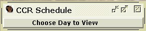

Introduction
Features
Listen to CCR!
Listen to User Specified RTP
View CCR Schedule
RTP Session History
CCR 'Media Player'
Requirements
About CCR, More Info
View the Cork Campus Radio Schedule

1) Viewing Schedule for 'Today':
A user can view 'Cork Campus Radio's' schedule's through the 'Cork Campus RTP Client'. This will give the information on the station's programmes for that particular day including:
- Time/Name of programme.
- A short description of the programme.
- The presenters of the programme.
Figure 2.3: View Schedule
A window is displayed showing that particular day's programming (see fig. 2.2 below). Should this not happen the database may be undergoing maintenance.
Figure 2.2: Schedule as displayed in 'Cork Campus Radio RTP Client'.
2) Viewing the Schedule for any particular day of the week:
A user can view the 'Cork Campus Radio's' schedule for any given day of the week by choosing the 'Display Week's Daily Schedules' item from the 'Tools' menu of the 'CCR RTP Client's main window. The user is then presented with a small window called 'CCR Schedule', with a menu containing a listing of the days of the week (fig. 2.3 below).

Figure 2.3: Window/menu to display the schedule for any given day of the week.
Once a day has been chosen from the 'Choose Day to View' menu, the 'Cork Campus Radio' schedule for that particular day will be displayed in a table within the window (fig. 2.4 below).
Figure 2.4: Schedule display for chosen day of the week.